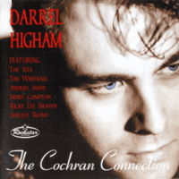

Darrel Higham - The Cochran Connection (Album, 1998)
01 - I'm Ready (1:42)
02 - Rockin' & Flyin' (2:48)
03 - Mighty Mean (1:51)
04 - Completely Sweet (2:20)
05 - You Oughta See Grandma Rock (2:26)
06 - Slow Down (2:02)
07 - Twenty-Flight Rock (2:16)
08 - Have I Told You Lately That I Love You (2:33)
09 - Drowning All My Sorrows (2:12)
10 - Closer, Closer, Closer (2:59)
11 - Pushin' (2:17)
12 - Sittin' In The Balcony (2:05)
13 - Sick & Tired (2:36)
14 - Teeange Cutie (1:53)
15 - Sweetie Pie (2:15)
16 - My Lovin' Baby (2:29)
17 - Lovin' Time (2:14)
18 - Am I Blue (2:15)
19 - Jeannie, Jeannie, Jeannie (2:25)
20 - Drowning All My Sorrows #2 (2:37)
21 - You Oughta See Grandma Rock #2 (3:04)
© RockStar Records :: [RSRCD 015]
Notes
United Kingdom, England.
Featuring:
Tracks 2, 6: James Compton (vocals)
Track 10: Tim Whitnall (vocals)
Tracks 4, 7, 12, 15, 17, 18: the Jets
Track 8: the Jets and Shelley Blond
reference information: Discogs® | Darrel Higham official website
Review
001/366 (Project 366)
I was thinking about what might be the right choice for the first review of the Project 366. And, well, I think I managed to find it! A great musician of today - Darrel Higham. In a good company of friends - the Jets, Shelley Blond, James Compton, Tim Whitnall, Anders Janes, Ricky Lee Brawn. Performs the compositions of one of the greatest and pretty famous musicians of the old years - Eddie Cochran.
Result?! Oh.. lovely tunes! Amazing Rock'n'Roll with classy authentic sound of Rockabilly. Recognizable voice, manner and tact of Darrel Higham are very consonant with the original taste of Eddie Cochran. Exciting sound. This album has been one of my favorite works by Darrel Higham from the moment I heard it for the first time.
Especially I was in love with the first track. There is something extraordinarily faerie in this song. "I'm Ready" is pretty light and unpretentiously straightforward - but so wonderful and very melodic. And largely thanks to the lyrics and the swift manner of performance - it is very catchy. The composition also allows the vocalist to reveal himself very well, to bring in something of his own, although preserving the original unique idea. And that sounds! Song is almost perfect for me - well-balanced, piercing sound of guitars solo, admirable voice, steadfast tone and good theme.
A dashing start smoothly rolls into a rather hit track "Rockin' and Flyin'" (but, of course, all tracks on the album are hits!). Arrangement and performance with many pearls. Song featuring piano, chic vocals, boppin' drums and courageous doublebass with guitar. Here are all the sweet points of both the performers and Eddie Cochran. Finesse! The feeling after listening is very confident, just rockin' and flyin'.
The third track "Mighty Mean" is a good example of a cover version. Darrel Higham did it very nice and artistically. The song is also a good pair for the next one - "Completely Sweet", the fourth track was performed with the help of the great Rockabilly musicians - the Jets. Both songs are very intriguing, lyrics are so pretty and melodies with great doublebass and walking waves. "Completely Sweet" also with so lovely backing vocals and whirling guitar solos. Next comes a row of simply slaughtering songs in terms of coolness. "You Oughta See Grandma Rock" is a bit wild, actually... Just a bit. Want a bit more? Then take two is for you (track number twenty first).. which is wild much more. The sixth song "Slow Down" sounding out marvelously and there is a surprising binder of guitar and piano. The song is in a stream of chic, a real tuneful work! Then "Twenty-Flight Rock" with great arrangement and performance. Basically, a very noticeable part of the success of these songs is interesting lyrics. Nevertheless, the musical side is made at a very high level.
After such a shake with so nifty songs, a quiet song sounds - "Have I Told You Lately That I Love You". Also elegant and with sensible lyrics still. Unhurried love song with a good effort of sweet backing voice. Quite touching, but the next song "Drowning All My Sorrows" brings the charge back. Thoroughgoing and sternly. By the way, twentieth track is another take of "Drowning All My Sorrows" (performed more emotionally, perhaps). I have always been impressed with such a very beautiful authentic Rockabilly. Good that almost each track with the influence of this elegance or consists entirely of it, despite that I also really like all this rockin' and rollin' in Eddie Cochran songs. The tracks on the album are listened to in pleasure one by one, and this is very exciting.
Tenth track "Closer, Closer, Closer" appears appropriate. A fairly refreshing and amusing addition to the tracklist. I like its country feelings. Eleventh track is an instrumental "Pushin'". Such a slightly pulsating motive and a strolling thing. Good snack before "Sittin' In The Balcony". A very interesting song in its features. Where is so lazy motive and dreamy tone. Darrel Higham tried to make his best. And it worked out. I think that this carefree song required a lot of effort. Good that title of the next song "Sick and Tried" is not about the aftermath of that. This well-known composition continues the line of glib tunes on the album. And this one is especially good, however, as well as the following fourteenth song "Teenage Cutie". What a nice transition between the thirteenth and fifteenth tracks. Because "Sweetie Pie" is very exquisite. Something that was done with most of the previous tracks - even more has been achieved here. And the song has reached considerable heights. But what only increases further with the following songs: "My Lovin' Baby" and "Lovin' Time". Different mood - but always cool. Rampant in one and extremely gentle in the other. Eighteenth track "Am I Blue" and nineteenth track "Jeannie, Jeannie, Jeannie", perhaps, impossible to perform wrongly.
The ending of the album consists of alternative versions of two songs played. And I like them much more. There is a saucy Rockabilly and even wildest swirl. Glorious!
In particular, I could recommend some tracks: "I'm Ready" (as my favourite); "Twenty-Flight Rock", both "Drowning All My Sorrows", "You Oughta See Grandma Rock 2" and "My Lovin' Baby" (as undeniable hits); "Completely Sweet", "Sweetie Pie" and "Sick And Tired" (as artistry); "Mighty Mean" and "Rockin' And Flyin'" (as mind-blowing). But, in general, all the songs are special and worthy of attention. I definitely like how the tracks on this album were recorded. Extremely atmospheric and mouth-watering. Albeit rather casually.
"The Cochran Connection" with a lot of beauty points. Fine rhythm, piano solos, boppin', rockin' and rollin', backing vocals, sonorous guitars.. and all is so harmonious and smooth. The voice is also quite mighty. Good set, actually. What remains to the listener? Smile? Maybe.. sensations? Yeah!
I decided to review it first - because I think this work is a real Number One!